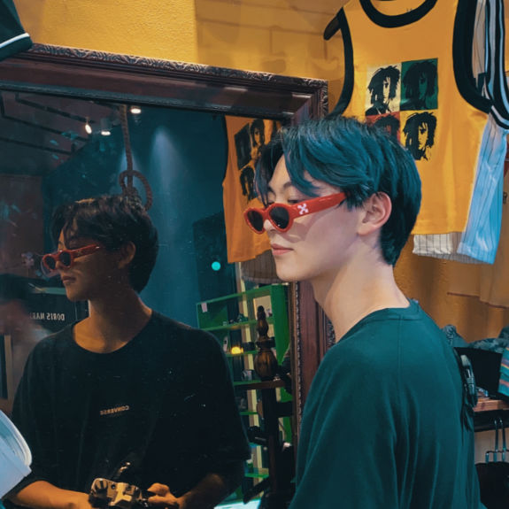
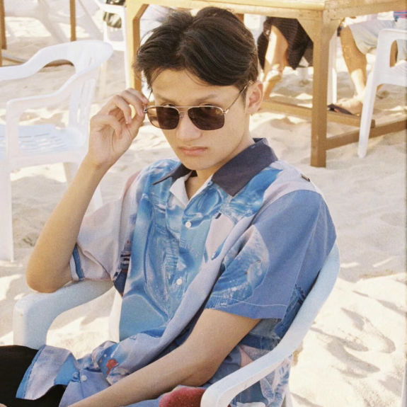

我们的团队 Our team

LOOOOONG
李曉瀧
网页设计
No special actions required, all sites you make with Mobirise are mobile-friendly.

Kevin Smith
何诚昊
技术建构
Use Mobirise website building software to create multiple sites for your clients.

Jessica Swift
Analyst
穿戴视觉研发
Create multiple pages. Don't forget to set links to your pages after creating them.